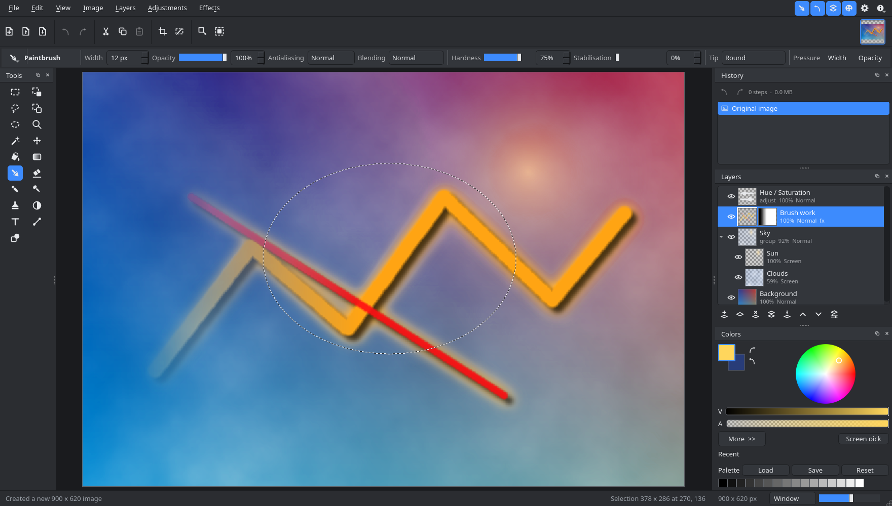
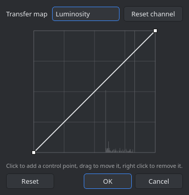
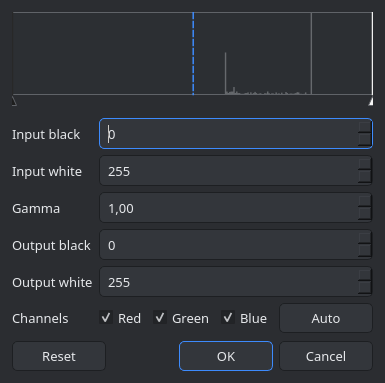
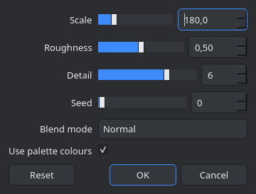
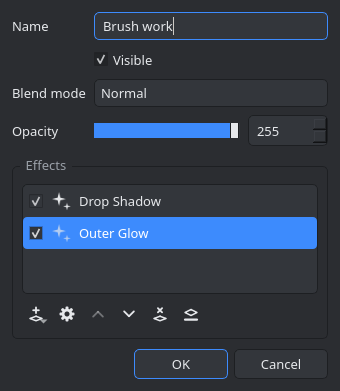
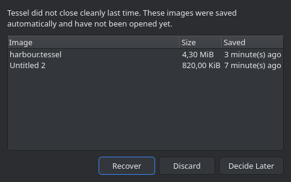
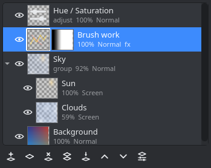

A layered image editor for Linux and Windows
Version 1.1.0
Tessel is a raster image editor written from scratch in C++20 with Qt 6. It follows the way of working that Paint.NET made popular: a tool palette in one corner of the image, History, Layers and Colors in the others, a tool options bar under the main toolbar, and a status bar that always tells you where the cursor is, how big the selection is and what the zoom level is.


What Tessel is
Tessel is an independent program. It is not a port of Paint.NET and shares no code with it: Paint.NET is closed source, Windows only and built on .NET, so no port of it can exist. What Tessel borrows is the workflow and the layout, both of which are implemented here from the ground up, including every icon, which is drawn procedurally with QPainter rather than loaded from a file.
The pixel engine has no GUI dependency, so it is tested headless; the interface is tested through the offscreen Qt platform plugin. Pixel work is spread over scanlines in parallel, blurs use a three pass box approximation of a gaussian, and resampling is done in premultiplied alpha so transparent edges do not bleed. The composite is cached in a grid of 64 pixel tiles, so painting in the corner of a large image costs what the corner costs rather than what the image costs.
What it can do
-
19 tools
Rectangle Select, Lasso Select, Ellipse Select and Magic Wand; Move Selected Pixels and Move Selection; Paintbrush, Pencil, Eraser, Paint Bucket, Gradient, Clone Stamp, Recolor, Color Picker, Text, Line / Curve, Shapes, Zoom and Pan. Each one brings its own controls into the tool options bar.
-
Selections that combine
The four selection tools share five combine modes: replace, union, subtract, intersect and exclusive or, with Ctrl and Alt as live modifiers while you drag. Every drawing tool is clipped to the active selection.
-
Layers and 14 blend modes
Any number of layers, each with its own name, visibility, opacity and blend mode: Normal, Multiply, Additive, Color Burn, Color Dodge, Reflect, Glow, Overlay, Difference, Negation, Lighten, Darken, Screen and Xor. Layers can be added, deleted, duplicated, reordered, merged down, flattened, flipped, rotated, zoomed and imported from any readable image file.
-
Groups and masks
Layers are a tree: a group has its own name, visibility, opacity, blend mode and mask, and acts on its children together. Any layer can carry an 8 bit mask that scales its alpha, painted with the ordinary tools and shown as a second thumbnail beside the layer's own.
-
Nothing baked in until you say so
An adjustment layer holds an effect and applies it to everything below it inside its group, re-editable for ever. An ordinary layer can carry a whole stack of effects, applied when it is composited and flattened into the pixels only when you ask.
-
13 adjustments
Auto Level, Black and White, Brightness / Contrast, Color Balance, Color Temperature, Curves, Hue / Saturation, Invert Alpha, Invert Colors, Levels, Posterize, Sepia and Threshold. Curves and Levels have dedicated dialogs with the channel histogram behind the controls.
-
40 effects
Nine categories: Artistic, Blurs, Color, Distort, Noise, Object, Photo, Render and Stylize. Every dialog is generated from the effect's own parameter list and previews live on the canvas, and Ctrl+F repeats the last one with the same settings.
-
History you can jump around in
Every edit is undoable, and the History panel lists them all so you can go back to any point in the session. A brush stroke stores only the rectangle it touched, so a long session stays cheap; the stack is capped by both step count and memory, and both caps are in Settings.
-
Layered and flat file formats
.tesselis the native format, a zip holding one PNG per layer, a JSON manifest, the selection and a flattened preview; the manifest nests, so groups, masks, adjustment layers and effect stacks all come back as they went in..ora(OpenRaster) keeps layers, opacity and blend modes, writes groups as nested stacks, and is read by Krita, GIMP and MyPaint. PNG, JPEG, BMP, TIFF, WebP, TGA, GIF and ICO are there too, along with anything else the Qt image plugins on the system can handle. -
Tablets and brush options
A pen's pressure can drive the width of a stroke, its opacity, or both, each a switch of its own and both off by default. Beside them: stabilisation for a steadier line, brush tips loaded from a PNG, an antialiasing level rather than a switch, and Overwrite in the Blending box.
-
Autosave and crash recovery
Every changed image is written to a recovery copy on a timer, on a worker thread. A run that ends cleanly leaves no trace; a run that does not is met at the next start with a list of what it left behind and the choice to recover it, discard it, or decide later. The images that were open are offered again too.
-
Effect plugins
Effects can be written outside the program and loaded at startup, and they appear in the menus, the adjustment layers and the effect stacks exactly as the built in ones do. Writing one is one documented header and a lambda.
-
Dark and light themes, English and Russian
Both themes are built in and switch without a restart. Because the icons are drawn at runtime in the current foreground colour, they follow the theme instead of needing a second set of files. The interface is translated and ships in English and Russian, chosen in Settings and applied at the next start.
A closer look
-

Curves. Click to add a control point, drag to move it, right click to remove it. -

Levels, with input and output ranges, gamma and per channel switches. -

A generated effect dialog, previewing live. -

Layer Properties, with the layer's non destructive effect stack. -

What a crashed session is met with at the next start. -

The Layers panel: an adjustment layer, a masked layer and a group.
Installing
From the release tarball
Download the tarball from
github.com/ExPikaPaka/tessel/releases,
unpack it and run tessel. Qt 6 has to be present on the system, since the
binary links against it dynamically:
- Arch and derivatives:
pacman -S qt6-base - Debian and Ubuntu:
apt install libqt6widgets6 libqt6printsupport6 - Fedora:
dnf install qt6-qtbase
To put it in the application menu:
sudo install -Dm755 tessel /usr/local/bin/tessel
sudo install -Dm644 org.tessel.Tessel.desktop \
/usr/share/applications/org.tessel.Tessel.desktop
sudo install -Dm644 org.tessel.Tessel.svg \
/usr/share/icons/hicolor/scalable/apps/org.tessel.Tessel.svgFrom source
You need a C++20 compiler, CMake 3.21 or newer, Qt 6.4 or newer (Widgets) and zlib. On
Arch and derivatives the packages are qt6-base, cmake,
ninja and gcc; on Debian and Ubuntu they are
qt6-base-dev, cmake, ninja-build,
g++ and zlib1g-dev.
git clone https://github.com/ExPikaPaka/tessel.git
cd tessel
cmake -S . -B build -G Ninja -DCMAKE_BUILD_TYPE=Release
cmake --build build
./build/tesselTo install system wide, together with its desktop entry and icon:
sudo cmake --install buildThe test suites are run with CTest. core covers the pixel engine,
documents, undo history and file formats without a display, and gui drives
the real widgets, tools and effects through the offscreen Qt platform plugin:
ctest --test-dir build --output-on-failurePaint.NET files. .pdn files cannot be read, because the
format is an undocumented serialisation of .NET objects. Tessel says so plainly when
one is opened and suggests exporting .ora or .png from
Paint.NET instead.
Where to go next
- The usage guide: a tour of the interface, how each tool works, how selections, layers, groups and masks behave, what an adjustment layer is for, how the effect dialogs preview, and what happens after a crash.
- The keyboard reference: every shortcut, in tables. The same list is in the program under F1.
- Writing an effect plugin: effects can be written outside the program and loaded at startup. The page has the interface, the directories that are scanned and a worked example with its source.
- The repository, for the source, the issue tracker and the full build instructions.